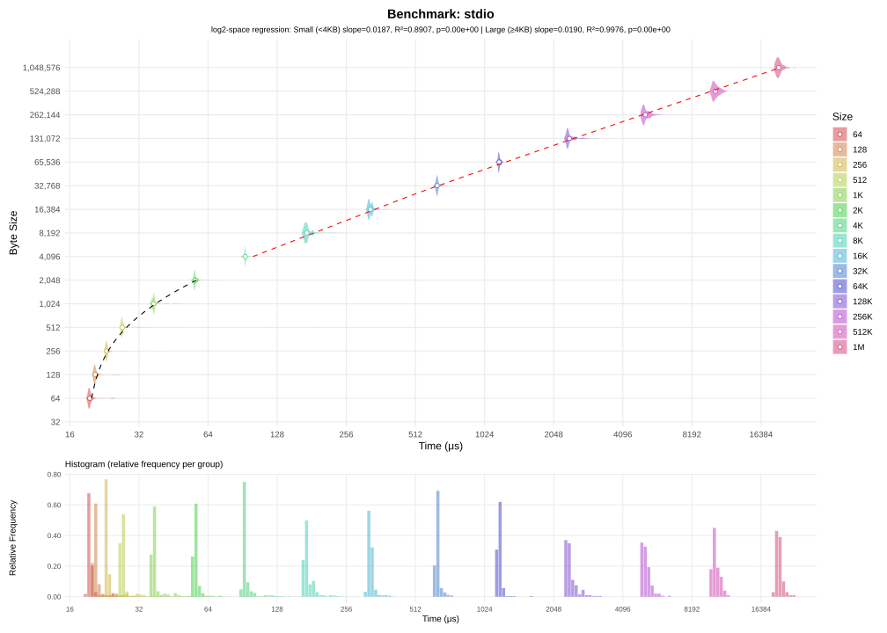
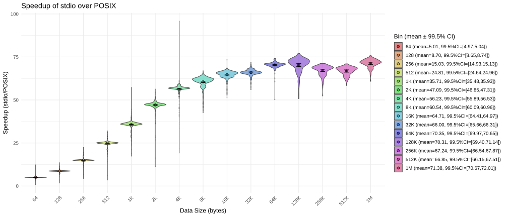
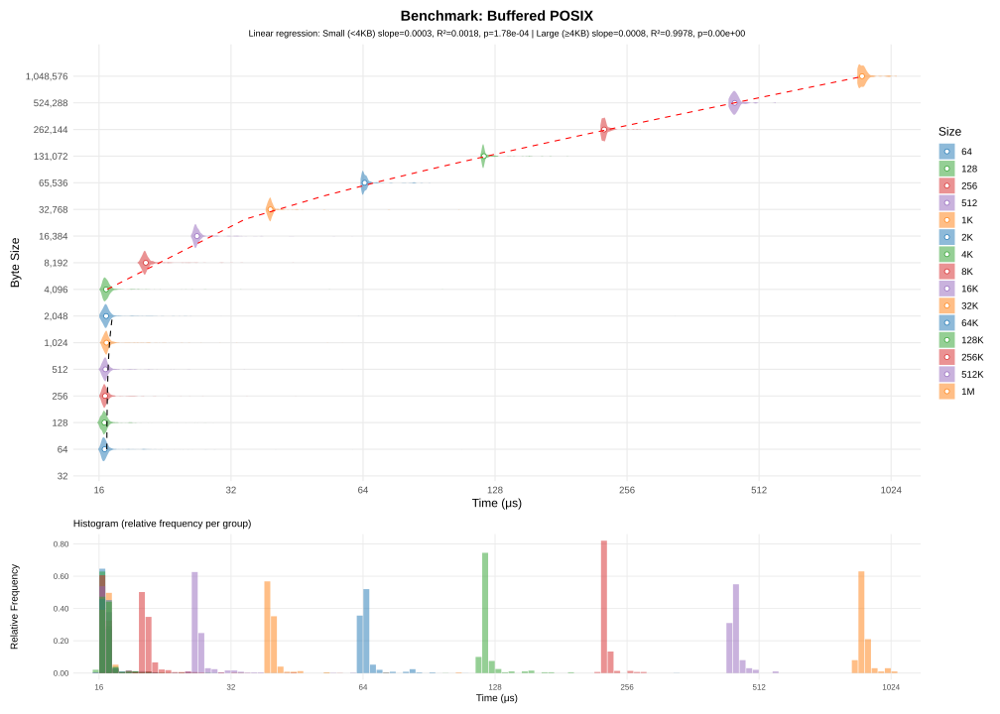
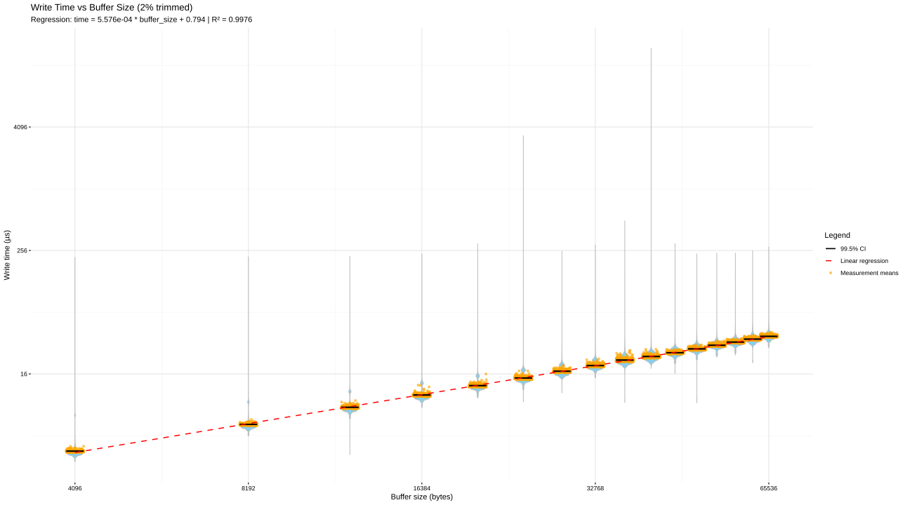

Introduction
If you've ever done system programming in C, you might have noticed that the standard lacks a function to copy files. In fact, there's no single function like
copyfile(const char *from, const char *to, int flags)In this article, I'll explore 8 ways to copy files on Linux, and I'll discuss the pros and cons of each methods.
POSIX copy
I'll start by introducing the POSIX copy function. This function will use these 3 posix functions:
- open to open a file;
- read to read from an opened file;
- write to write to an opened file.
The simplest way to copy a file, is to first open it. This is done by calling open with the O_RDONLY flag, for reading. After that, we open the output file using the O_WRONLY flag, for writing. And use the O_CREAT flag, so it creates the file if it doesn't exist (or replace the existing file). Then we repeatedly call to read, to read one byte from the input file and write, to write that byte directly to the output file.
POSIX copy
void
copy_posix(const char* in, const char* out)
{
int fd_in = open(in, O_RDONLY);
int fd_out = open(out, O_WRONLY | O_CREAT, 0666);
unsigned char c;
while (1) {
/* read one byte */
if (read(fd_in, &c, 1) != 1)
break;
/* write one byte */
if (write(fd_out, &c, 1) != 1)
break;
}
close(fd_out);
close(fd_in);
}
This function read and write 1 byte at a time. While it looks fairly straightforward, it's not exactly fast. In fact, if you try to run this function, you'll see that it's excruciatingly slow. On my setup, it took 29 seconds to copy a single 10MB file. It's not that my disk is slow, in fact it can reach upwards of 500MB/s of read+write speed. The issue comes from how we're copying the data. Actually, if I perform the same copy using the cp utility from coreutils, it now only takes 9 milliseconds. This is because every time we call read or write, the programs has to ask the kernel to perform some operations. This is know as a Context Switch. Context switches are inherently slow operations. The kernel stops your process and perform the requested operations, only to later on restore your process. A round-trip context switch (which are typical for syscalls), take anywhere between 200 to 1000 nanoseconds. While that may seem low, we're doing 2 switches for every copied byte. On top of that, the kernel may decide to restore another process and wait longer before restoring our process.
Here's a simplified diagram of what happens when you call to read():
┌───────────┐ ┌─────────────┐ ┌──────┐
│ User mode │ │ Kernel mode │ │ Disk │
└───────────┘ └─────────────┘ └──────┘
│ │ │
│ read() call │ │
├──────────────────>┤ │
│ 100-500ns │ │
│ │ │
│ │ │
│ In Page Cache? │
│ yes │ no Submit disk I/O │
│ ┌────┼──────────────────────────>┤
│ │ │ 50-200us (SSD) │
│ │ │ 5-10ms (HDD) │
│ │ │ │
│ │ │ Chunk mapped to memory │
│ └───>┼<──────────────────────────┤
│ │ │
│ │ Copy to user buffer │
│ ├────────────────────┐ │
│ │ 50-300ns │ │
│ ├<───────────────────┘ │
│ read() return │ │
├<──────────────────┤ │
│ 100-500ns │ │
│ │ │
The underlying issue is that you're asking two different peice of hardware with very different clock speed to communicate sequentially. I found this table to illustrate my point: Latency Numbers Every Programmer Should Know. Your CPU performs billions of operations every seconds, when you ask it to read from the disk, it has to wait for a long time before being able to do anything else. That's why all modern kernels use caching. Instead of reading the requested single byte, it will read a bunch at once, often multiple thousands. Then it will store all those read bytes, while only returning you the single byte you asked for.
Even the disk is physically incapable of reading one byte only. Disks operate on a block-basis, and you may not read less than one full block at a time. You can check your disk's block size by doing this: cat /sys/block/sdX/queue/physical_block_size (usually 512 bytes).
For writing, it's even more sophisticated. Due to the Page Cache in the kernel, writing may not even write to the underlying file while your process lives. Instead the kernel may decide to schedule writing to the file later on, when the CPU becomes less busy. In the meantime, if another process wants to read from the file, then the kernel will simply return the cached version. This has a lot of implications, for instance, if your computer unexpectedly shuts down before the kernel can flush the writes, they may be definitely lost. That's why most database softwares avoid using the kernel's built-in cache. However, for most purposes, caching is fine and improves performance.
 As you can see, it performs very poorly. If I added cp on the graph, it wouldn't even show up as it's much faster than this function. The cost of copying a single byte comes up to about ~1.3μs, which isn't particularly fast, not to say very slow.
As you can see, it performs very poorly. If I added cp on the graph, it wouldn't even show up as it's much faster than this function. The cost of copying a single byte comes up to about ~1.3μs, which isn't particularly fast, not to say very slow.Copy in 100% standard C
In this section, I'll rewrite the previous POSIX copy function to only use features in the C standard. I've replaced open with fopen, write with fwrite, etc.
The whole function looks something like this:
The simplest, 100% standard-compliant copy function
void
copy_stdio(const char* in, const char* out)
{
FILE* fin = fopen(in, "r");
FILE* fout = fopen(out, "w");
while (1) {
unsigned char c;
/* read 1 byte */
if (fread(&c, 1, 1, fin) != 1)
break;
/* write 1 byte */
if (fwrite(&c, 1, 1, fout) != 1)
break;
}
fclose(fout);
fclose(fin);
}
But the standard does mandate one thing; I/O operations (fread, fwrite, etc.) have to be buffered. What this means is that, when reading a single byte, more bytes may be requested to be available in later calls. I say may, because the standard says nothing about how the buffering works in detail for these operations.
Below is the diagram on how fread() should work:
┌───────────┐ ┌─────────────┐
│ Program │ │ libc │
└───────────┘ └─────────────┘
│ │
│ │
│ │
│ │
│ │
│ │
│ fread() call │
├──────────────────>┤
│ │
│ In libc buffer?
│ yes │ no read() call ┊
│ ┌────┼─────────────────────>┤
│ │ │ │
│ │ │ read() return │
│ └───>┼<─────────────────────┤
│ │ ┊
│ │
│ │ Copy to user buffer
│ ├────────────────────┐
│ │ │
│ ├<───────────────────┘
│ │
│ │
│ fread() return │
├<──────────────────┤
│ │
│ │
In practice, libc's buffering is not meant to squeeze performance, but to make the experience less painful. For instance, when writing to stdout or stderr, libc will flush every time a \n is encountered.

The graph is similar to POSIX copy, but it's still far from matching cp's performance.If you pay attention to details, you may have noticed that the time is roughly the same for all sizes under 1kB. When I run the program under strace, I notice that:
[...]
openat(AT_FDCWD, "in.bin", O_RDONLY) = 3
openat(AT_FDCWD, "out.bin", O_WRONLY|O_CREAT|O_TRUNC, 0666) = 4
# First fread call
# Fstat in.bin
fstat(3, {st_mode=S_IFREG|0664, st_size=512, ...}) = 0
read(3, "h#\211\277p\\\257\372\202\232\2\255\r=\304c\314\207\306\331\243\203}x\7t\327\241\277\211\305\360"..., 4096) = 512
# Fstat out.bin
fstat(4, {st_mode=S_IFREG|0664, st_size=0, ...}) = 0
read(3, "", 4096) = 0
# After last fwrite call, before calling close, stdio will sync it's buffer with the file, calling write to do so
write(4, "h#\211\277p\\\257\372\202\232\2\255\r=\304c\314\207\306\331\243\203}x\7t\327\241\277\211\305\360"..., 512) = 512
close(4) = 0
close(3)
[...]
The first thing to notice is that even though we call fread and fwrite hundreds of times, read and write are only called once. Another odd fact is that fread will call fstat. There are many reasons for wanting to stat the file, but one reason is that stdio needs to select an appropriate flushing strategy. For instance when writing to a PIPE, data is usually flushed every time a newline (\n) is encountered, similarly this is used when writing to stdout/stderr, so your messages don't appear at the end of the program when file descriptors are closed. However, another reason for stat-ing the file is to determine the size of the file in advance. Even though I requested for a single byte to be read, fread asked for 4096 bytes to be read to the kernel. 4096 bytes might seem like an odd number, but it's actually a really specific value: the size of a memory page. In fact, if we look into how direct memory access for file descriptor works on Linux, open(2) man page says:
O_direct
[...]
Under Linux 2.4, transfer sizes, and the alignment of the user buffer and the file offset must all be multiples of
the logical block size of the file system. Under Linux 2.6, alignment to 512-byte boundaries suffices.
Since the logical block size for Ext4 is 4096, the kernel can't read less than 4096 bytes at once. However the story doesn't end here. Not only does stdio use buffering, the kernel page cache still applies when stdio calls to read or write. These buffers usually allocate at least one memory page, which corresponds to that 4096 bytes that read is invoked with. So it would look like glibc is doing a great job at buffering.
In fact, I computed a speedup comparison of stdio vs POSIX copying:

Even for smaller file sizes, it outperforms POSIX copy. For larger sizes it blows it out of the competition.As you can see, using stdio really did improve copying speed. Once the file size exceeds 4KiB, the copy is about 60x faster. That's a huge improvement, but we're still lagging far behind the simple cp utility. However, stdio is not always your friend. I ran the same benchmarks as before, this time using sizes close to the page boundary. The results speak for themselves:

There seems to be a significant overhead for 4096 byes, which is odd since this is the page boundary. Meaning that the same number of syscalls should be made than for copying 4095 bytes. What gets really strange, is the fact that it's slower than copying 4097 bytes. Looking at strace, 4097 bytes does cause additional system calls, since stdio will now have to read two pages. This is a hint, that what is slowing us down is not system calls, but stdio itself. To be sure of that, I set stdio's buffer size to 8kiB:
 Using setvbuf we're able to set the buffer's size for stdio. Note that the time includes the overhead caused by calling setvbuf.
Using setvbuf we're able to set the buffer's size for stdio. Note that the time includes the overhead caused by calling setvbuf.This tells us that stdio is the culprit, but this change only moved the problem further down the line. Performing copies of about 8192 bytes will highlight the same issues as before.
Which is why it might be time to learn buffering for ourselves. In the next section I'll show you how you can squeeze performances by using your own buffering.
Buffered POSIX copy
As I've stated in the previous section, fread and fwrite add their own buffering. And while not always optimal, it still performs way better than not using any buffers at all. So we'll implement our own custom buffering to find whether we can get more performances than stdio.
The basic idea behind buffering is that performing system calls (which in terms perform I/O operations) is inherently slow. So we do as much as possible to minimize the number of system calls our program will have to perform. In practice, that means attempting to reading more bytes at once, and letting read or write tell us how many bytes were actually read or written.
I present to you, buffered POSIX copy:
Buffered POSIX copy
#define BUFFER_SIZE (8192)
void
copy_posix_buffered(const char* in, const char* out)
{
int fd_in = open(in, O_RDONLY);
int fd_out = open(out, O_WRONLY | O_CREAT, 0666);
unsigned char buf[BUFFER_SIZE];
while (1) {
/* read up to BUFFER_SIZE bytes */
ssize_t nread = read(fd_in, buf, BUFFER_SIZE);
if (nread <= 0)
break;
size_t pos = 0;
/* write nread bytes */
while (pos != (size_t)nread) {
ssize_t nwrite = write(fd_out, buf + pos, (size_t)nread - pos);
if (nwrite < 0)
goto end;
pos += (size_t)nwrite;
}
}
end:
close(fd_out);
close(fd_in);
}
This function is similar to POSIX copy, however instead of reading and writing single bytes, we try 8192 bytes at once. Why that number you may ask? We'll see later why choosing the right buffer size matters.
In theory, since our previous POSIX copy was being slowed down by the high number of systems calls, using a buffer should mitigate that. If the bottleneck really was the number of system calls, this one should be much faster since we've reduced the number of system calls by about 8192.
And here are the results:

For sizes up to 4096, the time stays roughly the same, which is expected since they all finish within one call to read + write. Then the relationship becomes linear.What comes next, is naturally to test different buffer sizes and see how they affect the copying speed. Below is a benchmark of 20 different buffer sizes, to see how they affect the average copying speed:

{kind=link}
{kind=link}
{kind=link}
As expected, when the buffer is greater then number of bytes to copy, it performs extremely well. However, when the file gets larger, the smaller buffer sizes are definitely slowing down the copy. It would look like it's always optimal to use a very large buffer. Buffer size 64k is pretty much outperforming every other sizes, but there's a caveat for that.
For one, larger buffers require more memory and may greatly exceed the size of the read file. As stated previously, due to ext4's restrictions, a file may not occupy less that 4kiB of disk space, so that is a hint that our buffer size should be at least 4kiB. However using a 64kiB buffer to read such small files will waste a large quantity of memory. And while memory is cheap, cache is not. If you buffer fits in cache then it will perform better than having only ony a fraction of the buffer in cache. Looking at cachegrind, we get 0.08% cache misses for a buffer of 64kiB, while a buffer of 8192 gets 8 times less.
The second reason is that calling read will always force the kernel to read the requested number of bytes. In theory that is a good thing, if you know the exact size of the file, you can allocate a large-enough buffer and read it in one system call. However, the kernel won't always do exactly as you planned. When you request for data to be read, that request gets split into 4kiB pages and stored in the kernel's I/O Scheduler. Then it's up to the kernel to decide when to honor these requests. It may decide to read a few pages for your process, then read another page for another process. This what's called fairness, and it's a major factor into making your operating system responsive. E.g no single process may block I/O for all others.
Here's an example of how that might work:
┌─────────────┐ ┌────────────┐ ┌──────────┐
│ Process A │ │ Kernel │ │ Disk │
└─────────────┘ └────────────┘ └──────────┘
│ read(16kiB) │ │
├───────────────────>┤ │
┊ │ │
┌─────────────┐ │ │
│ Process B │ │ │
└─────────────┘ │ │
│ read(4kiB) │ │
├───────────────────>┤ │
┊ │ │
┌─────────────┐ │ │
│ Process C │ │ │
└─────────────┘ │ │
│ metadata I/O │ │
├───────────────────>┤ │
┊ │ Requests are split │
│ into 4kiB chunks │
┌────────┴─────────┐ │
│ I/O Scheduler │ │
├────┬─────────────┤ │
│ ID │ Request │ │
├────┼─────────────┤ │
│ 0 │ A read 4kiB │ │
│ 1 │ A read 4kiB │ │
│ 2 │ B read 4kiB │ │
│ 3 │ A read 4kiB │ │
│ 4 │ C metadata │ │
│ 5 │ A read 4kiB │ │
└────┴───┬─────────┘ │
│ Issue reads 0-2 │
├───────────────────────────┤
│ │
├<──────────────────────────┤
┊ Wake up B │ │
│<───────────────────┤ │
┊ │ Issue reads 3-5 │
├───────────────────────────┤
│ │
├<──────────────────────────┤
┊ Wake up A │ │
│<───────────────────┤ │
┊ │ │
│ │
┊ Wake up C │ │
│<───────────────────┤ │
┊ ┊ ┊
The kernel doesn't just split requests for fairness. The main reason is that I/O is faster when batched. As stated earlier, since we want to do as little as possible I/O operations (those are slow), we batch multiple requests in order to issue a single read.
For really large buffers, we start to see these diminishing returns:
 Copying a 10MiB file using different buffer sizes
Copying a 10MiB file using different buffer sizesFrom these informations, we will derive the two following numbers:
- the overhead of system calls: the total time spent by the program while performing syscalls;
- the overhead of cache misses: times lost by cache misses due to our buffers being too large.
Measuring system calls overhead
The system calls overhead can be defined as follows:
We perform one read plus one write system call for every piece of data we need to transfer.
In order to determine the values of and accurately, I'll consider these first order approximations:
- , where and are constants;
- , where and are constants.
Constants should encapsulate the constant overhead of perfoming system calls. Constants should represent how much overhead is required for each read/written bytes.
To test out this hypothesis, I'm gonna plot a micro benchmark benchmarking every read and write, then we'll see if a linear regression fits the data. In that case, the slope and intercept will give the and coefficients respectively.
 This is the overhead of each read calls for reading a 10MB file. Note how the distribution is multi-modal, this is because every time about 128kiB is read, the kernel pre-fetches the next 128kiB piece of data to be available for later reads. This phenomenon is clearly visible in the 8192 buffer size, since every 8 reads, one read will takes significantly longer than the others. Then the kernel decides to start fetching 256kiB at once, to speed up things even further.
This is the overhead of each read calls for reading a 10MB file. Note how the distribution is multi-modal, this is because every time about 128kiB is read, the kernel pre-fetches the next 128kiB piece of data to be available for later reads. This phenomenon is clearly visible in the 8192 buffer size, since every 8 reads, one read will takes significantly longer than the others. Then the kernel decides to start fetching 256kiB at once, to speed up things even further.The slope is roughly 2.58ns / byte, meaning that every additional byte adds about 2.6 nanoseconds of read time. The intercept is negative, which at first seems weirs, but we have to factor in the fact that the distribution is multi-modal. There is a large number of read that will take about 100x longer to return. Meaning that the base per-syscall overhead becomes negligible.
{kind=link}

This is the overhead of each write calls for reading a 10MB file. It looks like it's faster to write than read a file. The main reason is that kernel is buffering all writes. If the kernel were actually syncing when we call write, we would see a multi-modal distribution, like what happened with read.Due to the fact that the kernel is buffering all writes, what we see it pure a system-call scenario, without I/O. This confirms that for every system call, there will be a 794 ns overhead (round trip), then it takes 0.56 nanoseconds per bytes copied. That 0.56 nanoseconds matches the overhead for copying a buffer (e.g through memcpy).
Summary
< make summary of all methods, sum everything with pro/cons table >
Going further
In this article I've left out filesystem-level copy unexplored. These are special types of copy operations that rely on filesystem-specific features. For instance, btrfs has a copy-on-write feature. That means making a copy of a file is a trivial operation that doesn't even require reading the original file at all. Instead, the filesystem marks both files as holding the same content, and the copy will only be performed if you modify either of those file.
Methodology
All tests were done on the same filesystem, copying from one drive to the same drive. For the sake of simplicity, the copy program does not check for errors. A later function checks that the copied file's content match that of the original file.
- Linux version: 6.12.38+deb13-amd64
- CPU: AMD Ryzen 5 3600X
- Drive: WDC WDS500G1R0B
- Filesystem: Ext4 behind LVM+Luks2
As it is not possible to control how SDDs cache data, all tests were run once before recording their data.
To run individual benchmark, compile the copy.c file with the following flags:
gcc copy.c -Wall -Wextra -Wconversion -O2 -DCOPY=<NAME> -o copy
Where <NAME> is the copy method you want to benchmark
You can then run the program:
./copy <NUM> [avg|box]
Where:
- <NUM> is the number of tests you want to run;
- [avg] is an optional flag to output the average time in microseconds.
- [box] is an optional flag to output a box-diagram data for the run, in this format: MIN, Q1, MED, Q3, MAX, AVG.
To automatically run multiple tests, you can use the bench.sh script. This script will run 10000 tests for every tested method/size combination. In the script, you have to define the sizes and copy methods you want to benchmark:
- sizes is the list of sizes to use for benchmarking (passed to dd);
- methods is the list of copy methods to use.
The script will output each run to it's own file inside data/. Each tested method can then be combined to a single CSV file, by running the combine.sh script.